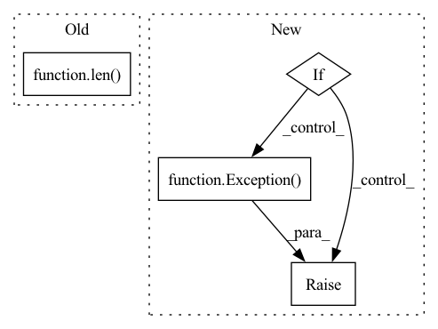

Pattern ID :39303
Before Change
])
dataset = datasets.ImageFolder(data_path, transform=transform)
dataset_len = len( dataset)
// dataset_len = 1000
indices = list(range(dataset_len))
random.shuffle(indices)After Change
def get_data_loaders(data_path=ORG_DATASET_PATH_IMAGE64, image_dim=64, train_split=0.8, batch_size=256,
data_type=DATA_TYPE_IMAGE):
if data_type == DATA_TYPE_IMAGE:
return get_image_data_loaders(data_path=data_path, image_dim=image_dim, train_split=train_split,
batch_size=batch_size)
if data_type == DATA_TYPE_OPCODE:
return get_opcode_data_loaders(batch_size=batch_size)
raise Exception( "Unknown Datatype passed for Data Loaders")
In pattern: SUPERPATTERN
Frequency: 4
Non-data size: 4
Instances Fragment ID: 111527012
Project Name: pratikpv/malware_detect2
Commit Name: 9f58c5934b6a914ad0e2b24fff39a05bfbc12604
Time: 2020-06-03
Author: pratik.prajapati@gmail.com
File Name: data_utils/data_loaders.py
M Class Name: AnonimousClass
N Class Name: AnonimousClass
M Method Name: get_data_loaders(5)
N Method Name: get_data_loaders(4)
M Parent Class:
N Parent Class:
M File Name: data_utils/data_loaders.py
N File Name: data_utils/data_loaders.py
M Start Line: 33
M End Line: 65
N Start Line: 105
N End Line: 112
Before Change
.
// pylint: disable=no-self-use
// [...] call DriverAPI
num_tasks: int = sum([len( ta.client_ids) for ta in req.task_assignments])
return CreateTasksResponse(task_ids=list(range(num_tasks)))
def get_results(self, req: GetResultsRequest) -> GetResultsResponse:After Change
def create_tasks(self, req: CreateTasksRequest) -> CreateTasksResponse:
Schedule tasks.
if self.stub is None:
log(ERROR, ERROR_MESSAGE_DRIVER_NOT_CONNECTED)
raise Exception( "`Driver` instance not connected")
// Serialize, call Driver API, deserialize
req_proto = serde.create_tasks_request_to_proto(req)
res_proto: driver_pb2.CreateTasksResponse = self.stub.CreateTasks( Fragment ID: 111527011
Project Name: adap/flower
Commit Name: 881de8678a9deeec5a61ac5833f75eda4f4d086b
Time: 2022-10-25
Author: daniel@adap.com
File Name: src/py/flwr/driver/driver.py
M Class Name: Driver
N Class Name: Driver
M Method Name: create_tasks(2)
N Method Name: create_tasks(2)
M Parent Class:
N Parent Class:
M File Name: src/py/flwr/driver/driver.py
N File Name: src/py/flwr/driver/driver.py
M Start Line: 99
M End Line: 100
N Start Line: 98
N End Line: 107
Before Change
if label_name != VggFace2Path.IMAGES_DIR_NO_LABEL:
label = \
self._categories[AnnotationType.label].find(label_name)[0]
item_id = item_id[len( label_name) + 1:]
if item_id not in items:
image_path = osp.join(self._dataset_dir, self._subset,
row["NAME_ID"] + VggFace2Path.IMAGE_EXT)After Change
image=image_path)
annotations = items[item_id].annotations
if [a for a in annotations if a.type == AnnotationType.points]:
raise Exception( "Item %s: an image can have only one "
"set of landmarks" % item_id)
if len([p for p in row if row[p] == ""]) == 0 and len(row) == 11:
annotations.append(Points(
[float(row[p]) for p in row if p != "NAME_ID"], label=label)) Fragment ID: 111527010
Project Name: openvinotoolkit/datumaro
Commit Name: 1325eef27b7478b4e474ad56a53a6552f57dcba4
Time: 2021-02-16
Author: anastasia.yasakova@intel.com
File Name: datumaro/plugins/vgg_face2_format.py
M Class Name: VggFace2Extractor
N Class Name: VggFace2Extractor
M Method Name: _load_items(2)
N Method Name: _load_items(2)
M Parent Class: SourceExtractor
N Parent Class: SourceExtractor
M File Name: datumaro/plugins/vgg_face2_format.py
N File Name: datumaro/plugins/vgg_face2_format.py
M Start Line: 65
M End Line: 99
N Start Line: 74
N End Line: 118
Before Change
// Train
fit_begin = timeit.default_timer()
results = self.numpy_client.fit(parameters, ins.config)
if len( results) == 2:
print(DEPRECATION_WARNING_FIT)
results = cast(Tuple[List[np.ndarray], int], results)
parameters_prime, num_examples = resultsAfter Change
results: Tuple[List[np.ndarray], int, Metrics] = self.numpy_client.fit(
parameters, ins.config
)
if not (
len(results) == 3
and isinstance(results[0], list)
and isinstance(results[1], int)
and isinstance(results[2], dict)
):
raise Exception( EXCEPTION_MESSAGE_WRONG_RETURN_TYPE_FIT)
// Return FitRes
parameters_prime, num_examples, metrics = results
parameters_prime_proto = weights_to_parameters(parameters_prime) Fragment ID: 111527002
Project Name: adap/flower
Commit Name: 78409ffe5947fd670fcc116d962f229b7355e9d1
Time: 2022-03-02
Author: daniel@adap.com
File Name: src/py/flwr/client/numpy_client.py
M Class Name: NumPyClientWrapper
N Class Name: NumPyClientWrapper
M Method Name: fit(2)
N Method Name: fit(2)
M Parent Class: Client
N Parent Class: Client
M File Name: src/py/flwr/client/numpy_client.py
N File Name: src/py/flwr/client/numpy_client.py
M Start Line: 226
M End Line: 238
N Start Line: 194
N End Line: 206